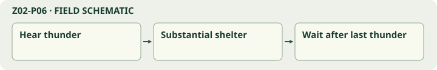

Z02-P06 · Shelter and housing
Seek lightning-safe shelter
Distinguish weather cover from lightning protection.
When it applies · Thunder is heard or a thunderstorm threat makes continued exposure unsafe.
Equipment · Forecast, alert source and preidentified shelter destinations when available.

Actions
- Plan a way to reach a substantial building or enclosed hard-topped vehicle before storms develop.[E07, ED]
- At thunder, stop outdoor activity and get to the identified shelter if safely accessible. A fabric shelter, open pavilion or isolated tree cannot provide comparable protection.[E07]
- Wait at least 30 minutes after the last thunder before returning outside. Reassess other hazards before departure.[E07, ED]
Verify · Confirm what the shelter actually is and when thunder was last heard.[E07, ED]
Stop or change course · If safe shelter is unavailable, remaining outdoors is hazardous. Seek the safest accessible option and avoid treating any outdoor location as safe from lightning.[E07]
Evidence and editorial notes
- E07 · NWS · Lightning Tips
- If you hear thunder; when it is safe to return · Thunderstorm and reachable substantial building or enclosed hard-topped vehicle
Move to proper shelter at thunder. Wait 30 minutes after last thunder before resuming outdoor activity.
Primary source · checked 2026-11-24
Source lineage · NWS lightning guidance; new manuscript.